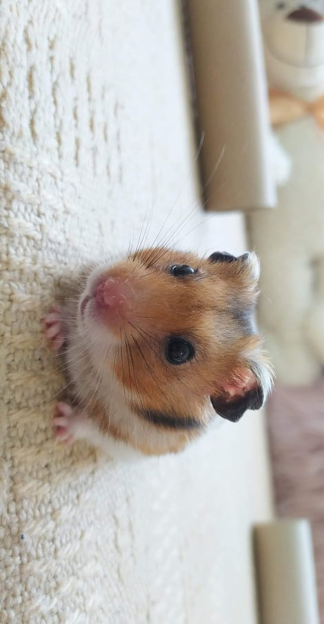
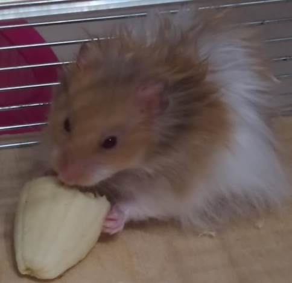
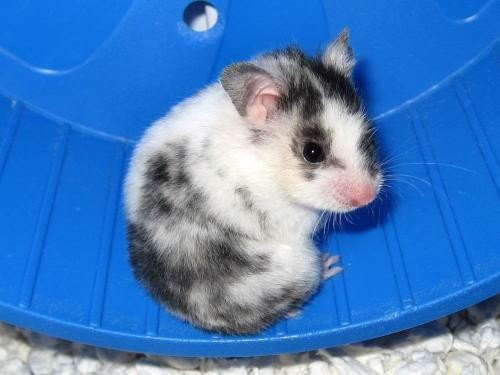
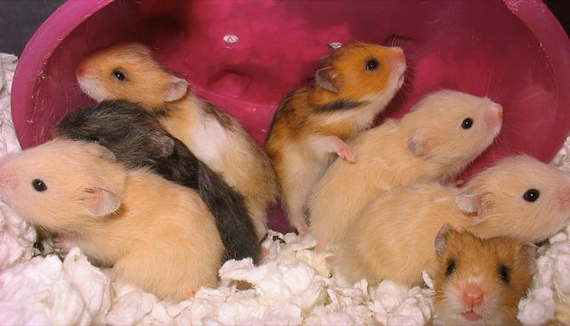

1. Chomik syryjski krótkowłosy (short-hair)
Tuptuś (zdjęcie autorskie)

2. Chomik syryjski długowłosy (long-hair)
Nunuś (zdjęcie autorskie)

3. Chomik syryjski satynowy - o włosiu satynowym, lśniącym i gładkim (satin)

4. Chomik syryjski z sierścią gęstą i kręconą (rex)

A tu inne chomiczki :)
